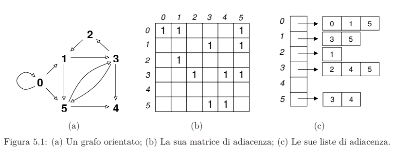
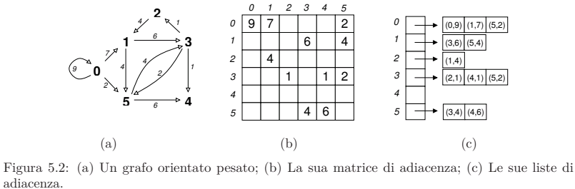
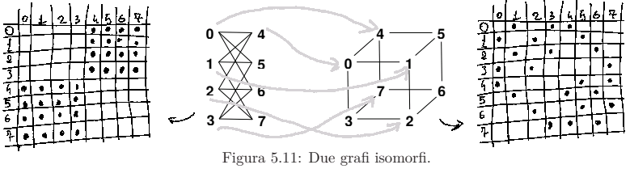

I grafi e gli alberi¶
I grafi sono importanti perche ci permettono di modellare in modo preciso e visualmente intuitivo le relazioni tra elementi di un insieme.
Grafi orientati¶
Grafo orientato
Un grafo orientato è una relazione \(E: V \leftrightarrow V\) su un insieme finito \(V\).
Gli elementi di \(V\) vengono detti nodi o vertici e gli elementi di \(E\) vengono detti archi o lati.
Un grafo è generalmente denotato con la lettera \(G\) o varianti (\(G^{'}, G_1, G_2,...\)).
Per enfatizzare l'insieme dei nodi V e l'insieme degli archi, si tende a scrivere \(G = (V, E)\)
I grafi definiti in questa maniere sono considerati orientati in quanto un arco \((x,y) \in E\) (dove \(x,y \in V\), quindi x e y sono nodi), si dice che parte da x ed arriva ad y.
Cappio o loop
Un arco del tipo \((x,x) \in E\), parte ed arriva allo stesso nodo X ed è denominato cappio o loop
Il numero dei nodi in un grafo è definito dalla cardinalità dell'insieme dei nodi (\(|V|\)).
Il numero degli archi, dalla cardinalità dall'insieme degli archi \(|E|\).
La dimensione di \(G\) è data dalla somma \(|V|+|E|\).

Vicinato
Due nodi \(x,y \in V\) si dicono adiacenti o vicini quando c'è un arco che li collega (\((x,y) \in E \lor (y,x) \in E\)).
Il vicinato (di un nodo \(x \in V\)) si può poi distinguere in
vicinato in uscita (\(N^+(x) = \{ y | (x,y) \in E \}\)), chiamato anche stella uscente in x e
vicinato in ingresso (\(N^-(x) = \{ x | (x, y) \in E \}\)), chiamato anche stella entrante in x
Grado
Il grado di uscita di x è definito come la cardinalità del suo vicinato di uscita \(d^+_x = |N^+ (x)|\).
Il suo grado di ingresso è \(d^-_x = |N^- (x)|\).
Le proprietà TUSI¶
Le proprietà TUSI valgono anche per i grafi:
- \(E: V \leftrightarrow V\) è totale se e solo se per ogni nodo \(x \in V\) vale \(d^+_x \geq 1\)
- \(E: V \leftrightarrow V\) è univalente se e solo se per ogni nodo \(x \in V\) vale \(d^+_x \leq 1\)
- \(E: V \leftrightarrow V\) è surgettiva se e solo se per ogni nodo \(x \in V\) vale \(d^-_x \geq 1\)
- \(E: V \leftrightarrow V\) è iniettiva se e solo se per ogni nodo \(x \in V\) vale \(d^-_x \leq 1\)
Rappresentazione dei grafi orientati¶
Esistono diversi modi per rappresentare i grafi orientati
Matrice di adiacenza¶
La matrice di adienza rappresenta una rapresentazione tabellare
Matrice di adiacenza
Una matrice di adiacenza di \(G\) è una matrice quadrata (tabella con lo stesso numero di righe e colonne), da 0 a n-1 righe e colonne, dove l'elemento \(A_{ij}\) (riga i e colonna j) assume un valore in \({0,1}\) con il significato
È possibile osservare un esempio della matrice di adiacenza nell'esempio poco sopra.
Liste di adiacenza¶
Grafo sparso
Un grafo si dice sparso quando il numero di archi è proporzionale al numero di nodi
Le liste di adiacenza sono spesso usate per rappresentare grafi sparsi, che quindi spesso si ricollegano alla vita reale.
Liste di adiacenza
Una lista di adiacenza di un grafo orientato \(G = (V,E)\) è un array \(A\) di \(n = |V|\) insiemi in cui l'elementi \(i\)-esimo rappresenta il vicinato in uscita del nodo \(i \in V\), ovvero \(A[i] = N^+ (i)\)
Grafi etichettati e pesati¶
Possiamo arricchire la struttura base di un grafo \(G = (V,E)\) aggiungendo delle etichette sugli archi e/o sui nodi.
Grafo etichettato e pesato
Un grafo orientato etichettato è una tripla \(G = (V,E,L)\) dove \(L\) è una funzione \(L: (V \cup U) \rightarrow D\), che associa ad ogni nodo ed arco un'etichetta presa da un dominio D.
Se D è un valore numerico, il grafo si dice pesato e ciascuna eticehtta diventa quindi un peso.
È possibile quindi adattare anche le rappresentazioni grafiche:

Cammini, cicli e connettività¶
In un grafo orientato, la relazione \((i,j)\) può essere interpretata come il fatto che il nodo i raggiunge direttamente il nodo j (eventualmente con un certo costo, dato dall'etichetta).
Introduciamo quindi il concetto di cammino, che ci permette di formulare problemi basati sulla raggiungibilità.
Un cammino è una sequenza di nodi, ogniuno dei quali è collegato al successivo con un arco.
Un nodo è raggiungibile da un altro se esiste un cammino che li collega.
Un cammino chiuso, che inizia e termina con lo stesso nodo, si definisce ciclo.
Walk
Dato un grafo \(G = (V,E)\) un walk \(P\) in \(G\) è una sequanza di nodi \(P = v_0,...,v_k\) con \(k \in \mathbb N\) tali che \((v_{i-1}, v_i) \in E\) per \(i \in \{1,...,k\}\).
In questo caso, \(P\) è un walk di lunghezza \(k\).
Le coppie \((v_{i-1}, v_i)\) sono detti archi attraversati da \(P\), mentre i nodi \(v_0,...,v_k\) sono detti i nodi attraversati da \(P\).
I nodi tra v_0 e v_k sono detti estremi di P.
Se \(k=0\) il walk ha lunghezza 0 ed è costituito dal solo nodo \(v_0\)
Dato un grafo orientato \(G = (V,E)\), con \(x,y \in V\):
Esiste un walk di lunghezza \(n \in \mathbb N\) se e solo se \((x,y)in E^n\)
Trail, Path
Un walk P è detto un trail se attraversa un arco al più una volta.
Un trail è detto path se attraversa un nodo al più una volta.
Notare che il walk \((0,0)\) non è un path ma un trail: il nodo 0 viene attraversato 2 volte, mentre l'arco una sola.
Se esiste un walk tra 2 nodi, allora esiste anche un trail.
Se il walk ha lunghezza \(>0\), allora anche il trail ha lunghezza \(> 0\).
Se esiste un trail tra 2 nodi, allora esiste anche un path.
Cicli nei grafi orientati¶
walk chiuso, circuito, ciclo
Un walk è detto chiuso se i suoi estremi sono uguali (\(v_0 = v_k\)) e se ha lunghezza > 0.
Un walk chiuso che è un trail è detto circuito.
Un circuito che è anche un path è detto ciclo.
Grafo ciclico e aciclico
Un grafo G si dice ciclico se esiste almeno un ciclo in G, altrimenti si dice aciclico.
Le seguenti affermazioni sono quindi equivalenti:
- Esiste un walk chiuso che inizia e termina in x
- Esiste un circuito che inizia e termina in x
- Esiste un ciclo che inizia e temrina in x
- \((x,x) \in E^+\)
Connettività¶
Grafo fortemente connesso
Un grafo orientato è fortemente connesso se per ogni coppia di nodi \((u,v) \in V \times V\) esiste un walk da \(u\) a \(v\).
Componente fortemente connessa
Una componente fortemente connessa di un grafo orientato è un sottinsieme non vuoto di nodi \(U \in V\) tale che: 1. Per ogni coppiad i nodi \((x,y) \in U \times U\), esiste un walk da x a y 2. Se \(U^{'}\) soddisfa la proprietà 1 e \(U \subseteq U^{'}\), allora \(U=U^{'}\)
La seconda condizione serve a garantire che U sia massimale, ovvero che aggiungendo un nodo esterno, la condizione venga violata.
Se un grafo è fortemente connesso, allora ha una sola componente fortemente connessa (l'intero grafo).
L'insieme delle componenti fortemente connesse di G (\(\{ U \subseteq V | U \text{ componente fortemente connessa di } G \}\)) forma una partizione di V.
Notare che:
- Ogni componente fortemente connessa è non vuota
- L'unione di tutte le componenti fortemente connesse è uguale a V (Copertura)
- Se \(U_1\) e \(U_2\) sono due componenti fortemente connesse distinte, allora sono disgiunte (Disgiunzione)
G è fortemente connesso se e solo se \(V \times V \subseteq E^*\)
Un grafo G è fortemente connesso se e esolo se per ogni coppia di nodi \(x,y \in V\) distinti (\(x \neq y\)) esiste un walk chiuso che attraversa x e y.
Grafi orientati aciclici¶
Grafo orientato aciclico
Un grafo orientato aciclico, detto DAG, è un grafo in cui i nodi d'i
Pozzi e sorgenti
In un DAG, i nodi con grado d'ingresso 0 sono detti sorgenti, ed i nodi con gradi d'uscita 0 sono detti pozzi.
Se un grafo è un dag, allora \(E^*\) è una relazione d'ordinamento parziale.
Ordinamento topologico
Dato un DAG \(G = (V,E)\), un ordinamento topologico di G è una biiezione \(\eta: V \rightarrow n = \{ 0,1,...,n-1 \}\) tali che per ogni arco \((u,v) \in E\) vale \(\eta (u) < \eta (v)\)
La numerazione \(\eta\) ordina quindi i nodi sulla base del numero di archi in ingresso (? - verificare)
Ogni DAG ha almeno un ordinamento topologico.
Grafi non orientati¶
Grafo non orientato
Si definisce grafo non orientato un grafo \(G = (V,E)\) tale che \(V\) è un insieme finito e \(E \subseteq \mathcal P_2(V)\)
Si ricorda che \(\mathcal P_2(V)\) rappresenta tutti i sottoinsiemi di V con cardinalità 2.
È inoltre importante osservare che nei grafi non orientati non ci possono essere cappi: l'insieme \({x,x}\) è esattamente l'insieme \({x}\), che quindi non appartiene a \(\mathcal P_2(V)\) avendo cardinalità 1.
Grafo orientato associato
Un grafo orientato associato ha la relazione degli archi \(E\) definita come \(E = \{ (x,y) \in V \times V | \{x,y\} \in E \}: V \leftrightarrow V\)
Tuttavia non è corretto pensare ad un grafo non orientatato come al suo grafo associato.
Incidenza ed estremi
Dato un grafo non orientato, due nodi \(x,y \in V\) sono vicini o adiacenti se c'è un arco \(\{x,y\} \in E\).
In questo caso si dice che l'arco è incidente a x e y, i quasi sono gli estremi dell'arco.
Il vicinato di un insieme \(N(x) = \{ y | x y \in E\}\)
Nodo universale ed isolato
Un nodo x si dice universale se se è vicino a tutti i nodi (\(E \backslash x \subseteq N(x)\)), mentre è isolato se il vicinato N(x) è vuoto.
Con \(\Delta\) si rappresenta il grado massimo in G
handshaking lemma
Per ogni grafo non orientato, la somma dei gradi dei nodi è il doppio del numero degli archi.
G contiene un numero pari di nodi che hanno gradi dispari.
Cammini, cicli e connettività sui grafi non orientati¶
La definizione di walk differisce solo per la sequenza di nodi come un insieme invece che una coppia.
La lunghezza di un walk, gli estremi, i nodi attraversati e gli archi attraversati sono definiti come per i grafi orientati.
Per tutti i grafi non orientati \(G = (V,E)\) e tutti i nodi \(x,y \in V\), esiste un walk di lunghezza \(n \in \mathbb N\) da x a y se e solo se \((x,y) \in \tilde{E}^n\)
In un grafo non orientato, se esiste un walk tra due nodi, allora esiste anche un trail, e quindi anche un path.
Cicli nei grafi non orientati¶
È importante notare che l'esistenza di un walk chiuso non implica l'esistenza di un circuito.
Questo perché il trail corrispondente a tale walk potrebbe essere di lunghezza 0, e quindi non essere un circuito.
Vale invece che l'esistenza di un circuito implica un ciclo.
Se esiste un circuito che inizia e termina in x, allora esiste anche un ciclo corrispondente.
Connettività¶
Un grafo non orientato si dice fortemente connesso quando il grafo corrispondente è fortemente connesso. Una componente fortemente connesssa è la stessa presente anche nel grafo connesso corrispondente.
Grafo connesso
Un grafo non orientato \(G=(V,E)\) si dice connesso se per ogni coppia di nodi \(u, v \in V \times V\) esiste un walk da u a v.
Componente connessa
Sia \(G=(V,E)\) un grafo non orientato, un sottoinsieme non vuoto dei nodi \(U \subseteq V\) si dice componente connessa se:
- Per ogni coppia di nodi \(x,y \in U \times U\) esiste un walk da x a y
- Se \(U^{'} \subseteq V\) soddisfa la proprietà 1 e \(U \subseteq U^{'}\) allora \(U = U ^{'}\)
\((x,y) \in \tilde E^*\) se e solo se esiste un walk da x a y.
Dato che \(\tilde E\) è una relazione simmetrica, \(\tilde E^*\) è una relazione di equivalenza.
Quindi x e y appartengono alla stessa copmonente connessa solo se appartengono a \(\tilde E^*\).
Quindi le classi di equivalenza di \(\tilde E^*\) sono esattamente le componenti connesse di G.
Un grafo \(G=(V,E)\) con \(x,y \in V\):
- È connesso solo se \(V \times V = \tilde E^*\)
- \((x,y) \in \tilde E^*\) se e solo se x ed y appartengono alla stessa componente connessa
Alberi¶
Definizione di Albero
Un albero è un grafo non orientato connesso aciclico e non vuoto.
I nodi alle estremità, ovvero di grado 1, sono detti foglie, mentre gli altri nodi sono chiamati interni.
Definizione di foresta
Una foresta è un grafo non orientato e aciclico (ed eventualmente non connesso), tale che ogni componente connesssa di una foresta è un albero.
Dato un albero \(G=(V,E)\), con \(n = |V|\), valgono le seguenti proprietà:
- Se \(n \geq 2\), allora G ha almeno una foglia, ovvero un nodo di grado 1
- G ha esattamente \(n-1\) archi, overo \(|E| = n-1\)
- Per ogni coppia di nodi distinti \(x,y \in V\), esiste un unico path da x a y
- Per ogni arco \(x y \in E\), la rimozione di \(x y\) rende il grafo non connesso
- Per ogni coppia di nodi distinti \(x, y \in V\), tale che \(x y \notin E\), l'aggiunta dell'arco \(x y\) crea un ciclo
Albero radicato
Un albero radicato \(G = (V,E,r)\) è un albero in cui un suo nodo \(r \in V\) viene chiamato radice.
Dato un nodo \(y \neq r\), i nodi lungi l'unco cammino che va da y ad r vengono chiamati antenati (come in un albero genealogico). Il primo è chiamato padre di y.
Simmetricamente, y viene detto discendente dei suoi antenati e figlio del suo nodo padre.
Sottoalbero
Un sottoalbero di \(G=(V,E,r)\) con radice \(r^{'} \in V\) è l'albero radicato in \(G^{'} = (V^{'}, E^{'},r^{'})\) in cui \(V^{'} \subseteq V\) contiene \(r^{'}\) e tutti i suoi discendenti in G.
\(E^{'} \subseteq E\) contiene tutti gli archi di G tra i nodi \(V^{'}\) (quindi \(E^{'} = E \cap \mathcal P_2(V^{'})\) )
Albero cardinale ed ordinale
Un albero radicato si dice ordinale se per ciscuno nodo interno è definito un ordinamento totale tra i suoi figli.
Si dice cardinale o k-ario se ogni nodo interno ha esattamente k figli, alcuni dei quali possono essere nulli (indicati con null). I figli sono enumerati e sono chiamati figlio0, figlio1, ..., figliok-1.
L'albero è completo se ogni nodo interno ha tutti e k i figli non vuoti.
Un esempio particolare è quando \(k=2\), chiamato albero binario, dove il primo figlio viene chiamato figlio destro ed il secondo figlio sinistro.
Attenzione: gli alberi cardinali ed ordinali sono strutture diverse: quello che può essere un albero cardinale non necessariamente è ordinale e viceversa.
Cammini euleriani ed hamiltoniani¶
Personalmente io ricordo a cosa sono assiciati ricordando che un arco "viene prima" di un nodo in termini di requisiti, e quindi mi baso sull'ordine lessicografico (alfabetico) per ricordare che la E di eulero (e la A di archi) vengono prima della h di Hamilton (e la N di nodi)
Cammini euleriani (archi)¶
Circuito e trail euleriano
Un circuito eurleriano per un grafo non orientato connesso G è un circuito che attraversa tutti gli archi in E una sola volta. Un trail (o percorso) euleriano è un trail che attraversa tutti gli archi una e una sola volta.
Un grafo contiene un percorso euleriano con estremi diversi se e solo se esattamente due nodi hanno grado dispari.
Dato un grafo non orientato connesso \(G\), esiste un circuito euleriano se e solo se ogni nodo ha grado pari. Esiste un percorso euleriano tra due nodi distinti \(d_x\) e \(d_y\) se e solo se \(x \neq y\)
Cammini hamiltoniani (nodi)¶
Ciclo e path hamiltoniano
Un ciclo hamiltoniano in un grafo orientato connesso è un ciclo che attraverssa tutti i nodi in V una ed una sola volta.
Un path (o cammino) hamiltoniano è un path che attraversa tutti i nodi in V una ed una sola volta.
In un grafo possono esistere più cicli hamiltoniani.
Trovare un path hamiltoniano si basa sul trovare una permutazione dei nodi in V che diano luogo ad un path.
Non esiste una caratterizzazione che ci permetta di garantire l'esistenza o meno di un ciclo hamiltoniano in G
Il problema del commesso viaggiatore¶
Il problema si basa sul cercare di individuare su una mappa un cammino che permetta ad una persona di attraverare tutto il grafo e tornare indietro percorrendo il minior numero possibile di chilometri.
La soluzione può essere identificata in un ciclo hamiltonianto di un grafo pesato che abbia il costo inferiore
Peso di un ciclo hamiltoniano
Dato un grafo pesato \(G=(V,E,L)\), il peso di un ciclo hamiltoniano \(H = v_0,v_1,...,v_k\) è la somma dei pesi degli archi attraversati da H:
Distanza su grafi¶
Il concetto di distanza a cui ci riferiamo è quella euclidea: la distanza che unisce 2 oggetti intesa come distanza di un segmento di retta che li unisce.
Distnaza
La distanza metica su un insieme A è una funzione \(d: A \leftrightarrow \mathbb R\) che soddisfa le seguenti proprietà per ogni \(x,y,z \in A\):
- \(d(x,y) \geq 0\)
- \(d(x,y) =0\) se e solo se \(x = y\)
- \(d(x,y) = d(y, x)\) (simmetria)
- \(d(x,y) \leq d(x,z) + d(z,y)\) (distanza triangolare)
Una funzione che soddisfa tutte queste proprietà tranne la simmetria è chiamata distanza quasi-metrica.
Distanza su grafo
La distanza tra due nodi di un grafo non orientato connesso è la lunghezza del walk più breve tra x e y, chiamato walk minimo
Possiamo definire la distanza anche in maniera induttiva:
1. \(d(x,y) = 0\) se \(x=y\) (caso base)
2. \(d(x,y) = 1 + min\{ d(z,y) | z \in N(x) \}\) (passo induttivo)
La distanza sui grafi è una distanza metrica per i grafi non orientati, mentre è quasi-metrica per i grafi orientati, soddisfando il concetto di distanza.
Diametro di un grafo
Il diametro di un grafo è la massima distanza tra coppie di nodi:
Gli alberi essendo grafi non orientati ereditano il concetto di distanza da questi ultimi.
Profondità e altezza di nodi negli alberi
In un albero radicato la profondità di un nodo x è la sua distanza dalla radice r \(d(x,r)\).
L'altezza è massima distanza tra x e le sue foglie discentendi.
L'altezza di un albero radicato è la sua altezza dalla radice.
Un albero cardinale si dice pieno se è completo e se foglie sono tutte alla stessa distanza dalla radice.
La radice r ha sempre profondità 0, mentre quella degli altri è sempre pari a 1 + la profondità del genitore.
Ogni foglia ha altezza 0 ed ogni nodo interno ha altezza pari ad 1 più il peso massimo tra le altezze dei figli.
Per i grafi pensati con pesi non negativi, si considera la somma dei pesi lungo il ammino piuttsoto che la loro lunghezza.
Per cammino minimo si intende il cammino pesato avente somma minima.
Inoltre in un albero il diametro è naturalmente definito, essendo la distanza massima tra coppie di nodi.
Isomorfismo¶
L'isomorfismo è una relazione che possiamo stabilire tra due grafi che hanno lo stesso numero di archi e nodi per realizzare che in realtà sono lo stesso grafo ma con etichette differenti.
Questa relazione può essere stabilita solo se possiamo trovare una corrispondenza tra i nodi
Isomorfismo
Dati due qualunque grafi \(G_1\) e \(G_2\), con stessa cardinalità di nodi \(|V_1| = |V_2|\) ed archi \(|E_1| = |E_2|\), un isomorfismo tra i due grafi è una biiezione \(f: G_1 \mapsto G_2\) tale che per ogni coppia di nodi \(u,v \in V_1\), vale che \(uv \in E_1\) se e solo se \(f(v)f(v) \in E_2\) (esiste il corrispondente arco in entrambi i grafi, oppure non esiste in entrambi).
In tal caso \(G_1\) e \(G_2\) sono detti isomorfi.

Altri grafi noti¶
Una clique è un grafo in cui ogni coppia di nodi è collegata da un arco.
Un ciclo è un grafo ciclico composto da un solo ciclo.
Un grafo lineare è un grafo aciclico composto da un solo cammino semplice.
Una stessa ha un nodo universale con tutti gli altri nodi come foglie.